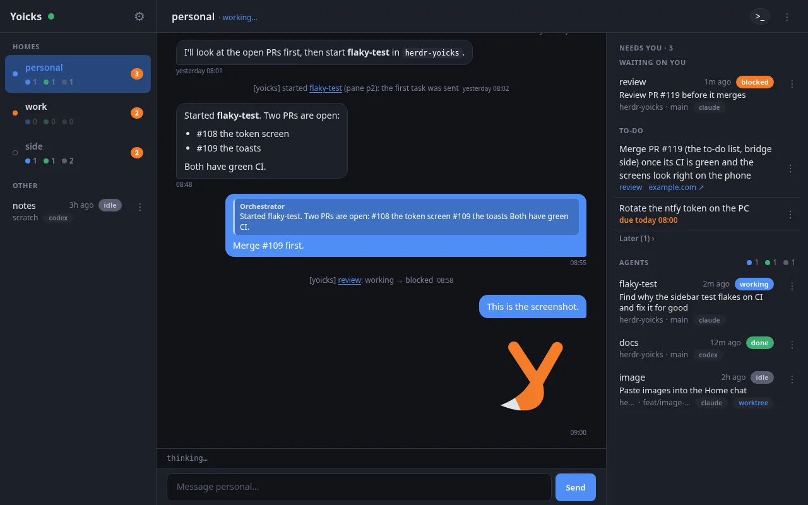
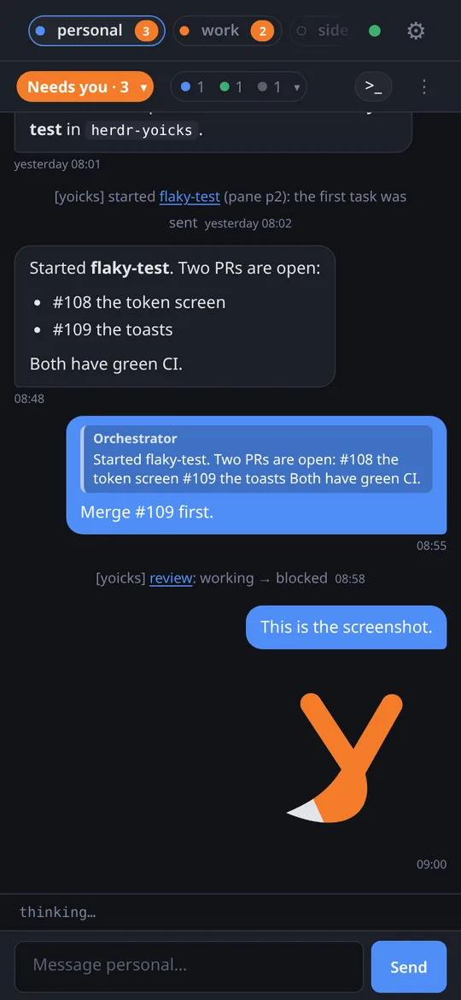
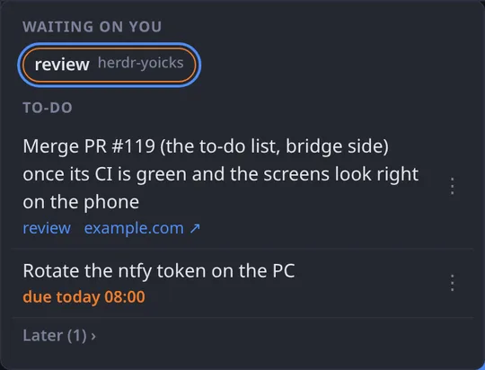
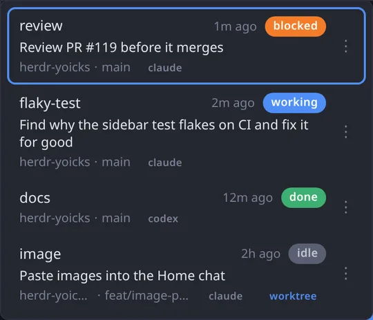

One Home, many agents at work 1 つの Home から、たくさんのエージェントを同時に
Hand the work to an orchestrator, one Claude Code agent you talk to on its Home. It starts a worker for each task (several changing one repository each get a git worktree of their own), follows them all at once, and comes back to you only when something is done or needs you. A herdr plugin; from your phone or a PC's browser. 仕事は orchestrator に渡します。Home で話しかける 1 つの Claude Code エージェントです。orchestrator はタスクごとにワーカーを起動し (同じリポジトリを並行して変更するものは、それぞれ専用の git worktree で)、同時に進め、終わったときやあなたが要るときだけ戻ってきます。herdr のプラグインで、スマホや PC のブラウザから使えます。
What it looks likeこんな画面です







What it doesできること
Many workers at once
ワーカーを同時にいくつも
The orchestrator starts a worker per task, each in a new herdr tab; workers changing the same repository side by side each get a git worktree of their own next to it. All run at once; a finished worker's tab is closed, and a merged worktree removed.
orchestrator はタスクごとにワーカーを起動します。どれも新しい herdr のタブで動き、同じリポジトリを並行して変更するものは、その隣に作る専用の git worktree で進みます。終わったワーカーのタブは閉じ、マージされた worktree は片付けます。
Orchestrators orchestratorIt follows them, not you
追いかけるのは orchestrator
A worker that finishes or stops for an answer wakes the orchestrator. It reads the result and gives the next task, or tells you what the worker is waiting for.
ワーカーが終わるか、答えを待って止まると、orchestrator が起きます。結果を読んで次のタスクを渡すか、ワーカーが何を待っているかをあなたに伝えます。
The yoicks commands yoicks のコマンドOnly what needs you
あなたが要るものだけ
A Home's Needs you gathers its blocked workers and its own question. A headless Home also keeps a to-do list of what only you can do (a PR to merge, a login, a decision) and reminds you of each when it comes due.
Home の Needs you に、止まっているワーカーと orchestrator 自身の質問が集まります。ヘッドレスの Home は、PR のマージ、ログイン、判断など、あなたにしかできないことをやることリストに残し、期日が来たら知らせます。
Headless orchestrators ヘッドレスの orchestratorFrom merge to deploy
マージの先まで
With pr_watch on, a headless Home learns when a PR on its list is merged. It then deploys, if its own rules allow it, and removes the worker's worktree.
pr_watch を有効にすると、ヘッドレスの Home はリストにある PR のマージに気づきます。自分の rules が許していればデプロイまで進め、ワーカーの worktree を片付けます。
One Home per account
Home はアカウントごと
An orchestrator sees and drives only the agents of its own Claude account, so a work Home and a personal one stay apart. The app switches between Homes.
orchestrator が見て動かせるのは、自分の Claude アカウントのエージェントだけです。仕事用と個人用の Home を分けておけて、アプリで切り替えられます。
What it can reach 何に触れられるかIn your hand, on your machine
手元から、自分のマシンで
The bridge serves a PWA for your phone or a PC: every agent with its live status, a pane's terminal or chat, a notification when one is blocked or done. No cloud; you pick the way in.
ブリッジがスマホや PC 向けの PWA を配信します。全エージェントの状態、ペインの端末やチャット、blocked や done になったときの通知。クラウドは使わず、スマホからの経路は自分で選びます。
Using the app アプリの使い方